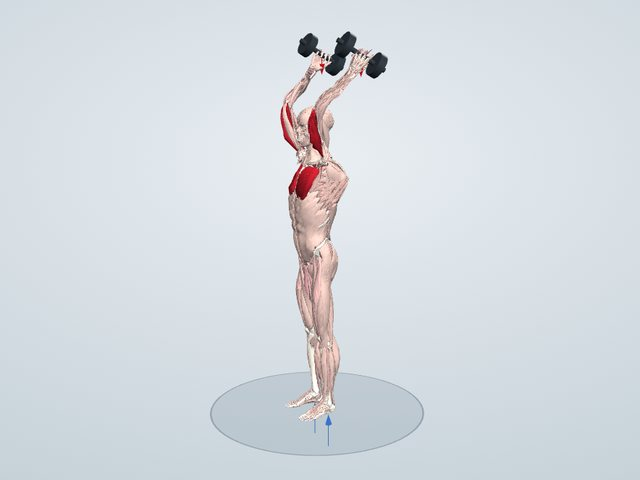
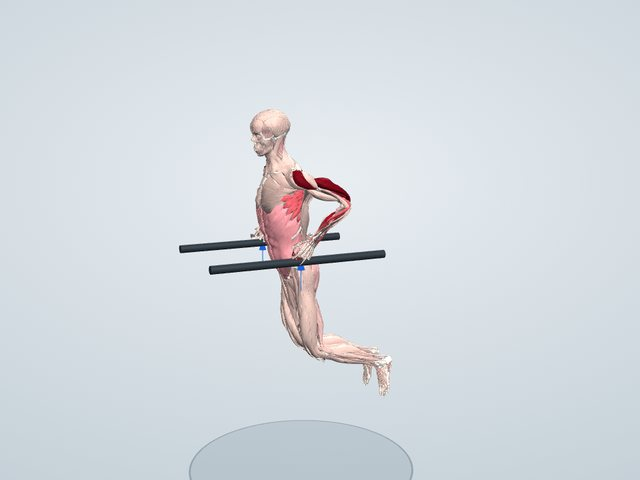
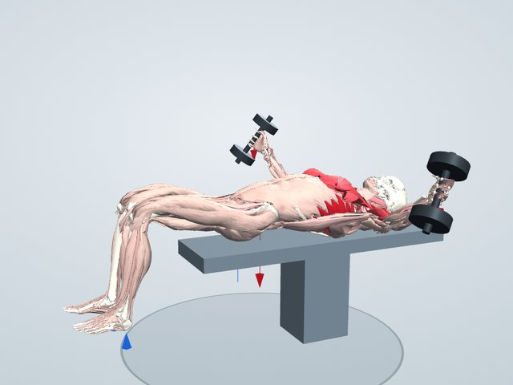
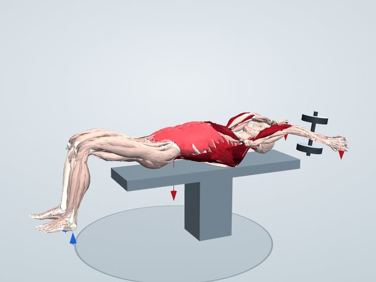
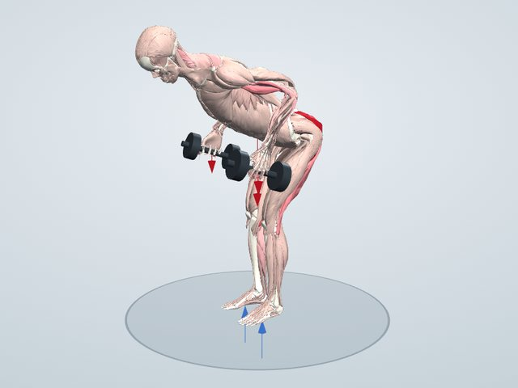
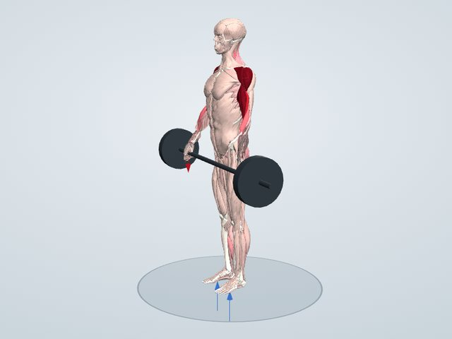

Exercises
筋トレ種目一覧
28種目のやり方と、3Dモデルで計算した「働く筋」を紹介します。種目を選ぶと、動く画像と解説が見られます。
脚・お尻


胸・背中・肩・腕
 腕立て伏せ大胸筋・三角筋前部・上腕三頭筋
腕立て伏せ大胸筋・三角筋前部・上腕三頭筋 懸垂広背筋・大円筋・上腕二頭筋・上腕筋
懸垂広背筋・大円筋・上腕二頭筋・上腕筋 ラットプルダウン広背筋・大円筋・上腕二頭筋
ラットプルダウン広背筋・大円筋・上腕二頭筋 ベントオーバーロウ広背筋・菱形筋・僧帽筋中部・三角筋後部
ベントオーバーロウ広背筋・菱形筋・僧帽筋中部・三角筋後部 ベンチプレス大胸筋・三角筋前部・上腕三頭筋
ベンチプレス大胸筋・三角筋前部・上腕三頭筋 ショルダープレス三角筋・上腕三頭筋・僧帽筋
ショルダープレス三角筋・上腕三頭筋・僧帽筋 サイドレイズ三角筋中部・棘上筋
サイドレイズ三角筋中部・棘上筋 フロントレイズ三角筋前部・大胸筋鎖骨部
フロントレイズ三角筋前部・大胸筋鎖骨部 アームカール上腕二頭筋・上腕筋・腕橈骨筋
アームカール上腕二頭筋・上腕筋・腕橈骨筋
フレンチプレス上腕三頭筋
ディップス上腕三頭筋・大胸筋下部・三角筋前部
ダンベルフライ大胸筋・三角筋前部
ダンベルプルオーバー広背筋・大円筋・大胸筋・上腕三頭筋長頭
キックバック上腕三頭筋
アップライトロウ三角筋中部・僧帽筋上部